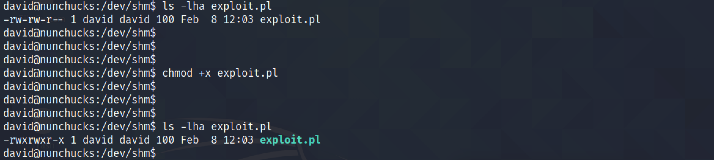

March 02, 2022
In this tutorial, we will see how to bypass AppArmor using a Perl script. AppArmor is a Linux kernel security module that allows the system administrator to restrict programs' capabilities with per-program profiles. This and this page contains more information about this vulnerability and its exploit.
We can see that Perl has the SetUID capability set. And we will be using this capability to bypass AppArmor.
Using this command from GTFOBins, we can see that we have root level privileges.
However, when we try to run /bin/sh, we are not able to get a shell as the root user.
Let's create a simple Perl script and execute it to see if we can get a shell as the root user.
Unfortunately, running the script with the perl command results in a "Permission denied" message.
This shows the configuration of AppArmor for /usr/bin/perl.
Let's change the permissions of our Perl script and make sure that it is executable. Having the script as executable allows us to run the script without specifying perl before the name of the script. This is because once we set the executable bit on the script, the script will be executed with whatever we have specified in the first line of the script.
Executing the script directly allows us to get a root shell.